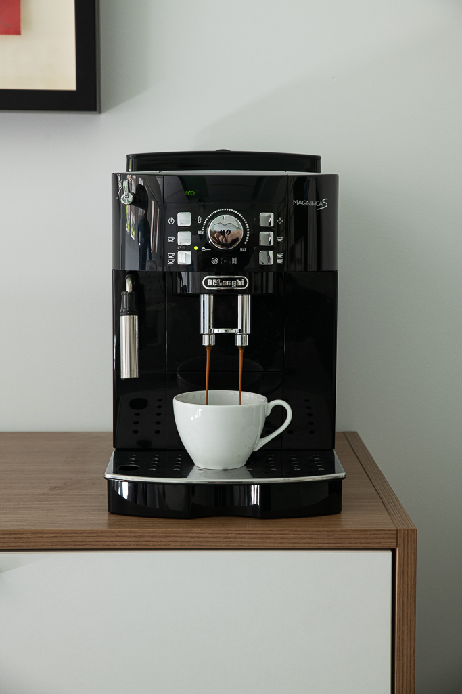
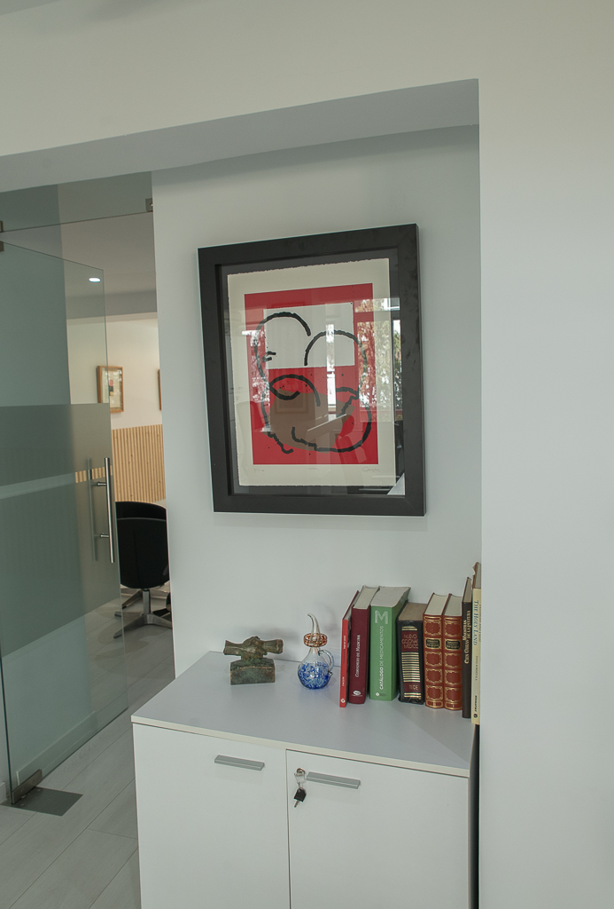

Advisory Board
Advisory Board
¿Cómo alineamos a 12 KOLs internacionales en una sola sesión?
Un laboratorio multinacional necesitaba consenso clínico entre especialistas de 5 países con perspectivas muy divergentes...
Leer casoLa primera agencia española de investigación de mercados dedicada exclusivamente al sector farmacéutico. Experiencia, profundidad y método al servicio de las mejores decisiones.

Fuimos la primera agencia española de investigación de mercados dedicada exclusivamente al sector farmacéutico. Cuatro décadas de trabajo ininterrumpido nos han convertido en el referente nacional en healthcare market research.
Descargar nuestra infografía histórica


"Así somos, así pensamos — el manifiesto NUIN"
Descargar manifiestoCuatro décadas de experiencia en el sector farmacéutico nos han permitido desarrollar un portfolio de servicios único, diseñado para obtener los insights más profundos y accionables.
Es la raíz de NUIN, nuestro Alpha y omega. Llevamos 40 años ayudando a los profesionales del sector farma a obtener insights relevantes y accionables que les permitan tomar las mejores decisiones.
Nuestra excelencia en este campo se basa en tres premisas fundamentales:
Metodologías cuantitativas diseñadas específicamente para el sector healthcare. Técnicas rigurosas que generan datos estadísticamente representativos y comparables.
La investigación cualitativa es el corazón de NUIN. Más de 15.000 horas de conversaciones profundas con stakeholders del sector salud nos avalan.
Somos los número 1 en moderación de Advisory Boards en España. Hemos moderado más de 750 Advisory Boards, presenciales y online, tanto nacionales como internacionales.
Con cada Advisory Board hemos aprendido pequeños detalles que nos han ayudado a desarrollar nuestro sistema de preparación que hace que se optimicen los resultados.
A través de nuestro método TWACE hemos dado soporte tanto a decenas de unidades de laboratorios farmacéuticos como a más de 50 hospitales.
La simplicidad y efectividad de TWACE ha conseguido que cambios que parecían traumáticos se lleven a cabo de forma satisfactoria y rápida, con una alta implicación del equipo y una mejora cuantitativa y cualitativa inmediata.
Nuestro equipo especializado en healthcare da soporte de medical writing a distintos tipos de proyectos editoriales, tanto a editoriales como a sociedades científicas o a laboratorios farmacéuticos.
Dejamos que nuestras salas hablen por nosotros, desde nuestra sala NUIN, la única de España diseñada específicamente para la realización de Advisory Boards, a la sala FOCUS, cuidada hasta el más mínimo detalle para desarrollar las entrevistas y reuniones de grupo en las mejores condiciones.




Cada rincón de nuestro espacio ha sido pensado para maximizar la calidad de la investigación, la comodidad de los participantes y la eficiencia del proceso.
Centro financiero de Madrid, a un paso de El Corte Inglés y de todas las tiendas y restaurantes de la calle Orense. Fácil acceso desde el aeropuerto, estaciones de tren, cercanías, metro y con dos parkings en la puerta.
Una de las cosas más difíciles de ser especialistas en farma es mostrar lo que puedes hacer por tus clientes sin desvelar información confidencial… así que os hemos preparado este pequeño blog que habla de una manera un poco diferente de casos reales a los que nos hemos enfrentado y en los que nuestros clientes tenían una necesidad que no sabían resolver y en los que pudimos ayudarles.
Advisory Board
Un laboratorio multinacional necesitaba consenso clínico entre especialistas de 5 países con perspectivas muy divergentes...
Leer caso Investigación Cualitativa
Investigación Cualitativa
Un cliente obtenía buenos resultados en encuestas pero su producto no se prescribía. Descubrimos por qué...
Leer caso
TWACEUn laboratorio farmacéutico necesitaba reformular su modelo de visita médica sin perder productividad durante la transición...
Leer casoEn NUIN sabemos lo importante que es crecer de la mano de otras agencias y organizaciones, compartiendo buenas prácticas y colaborando para elevar los estándares de calidad.
"Llevamos más de cuarenta años aprendiendo día a día para que tu próximo proyecto salga perfecto, ¿hablamos?"